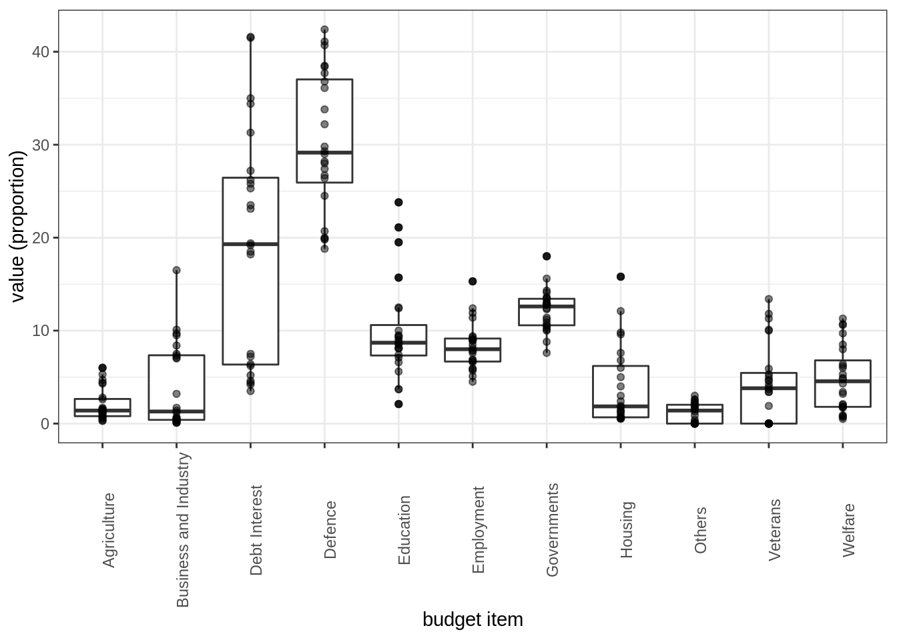
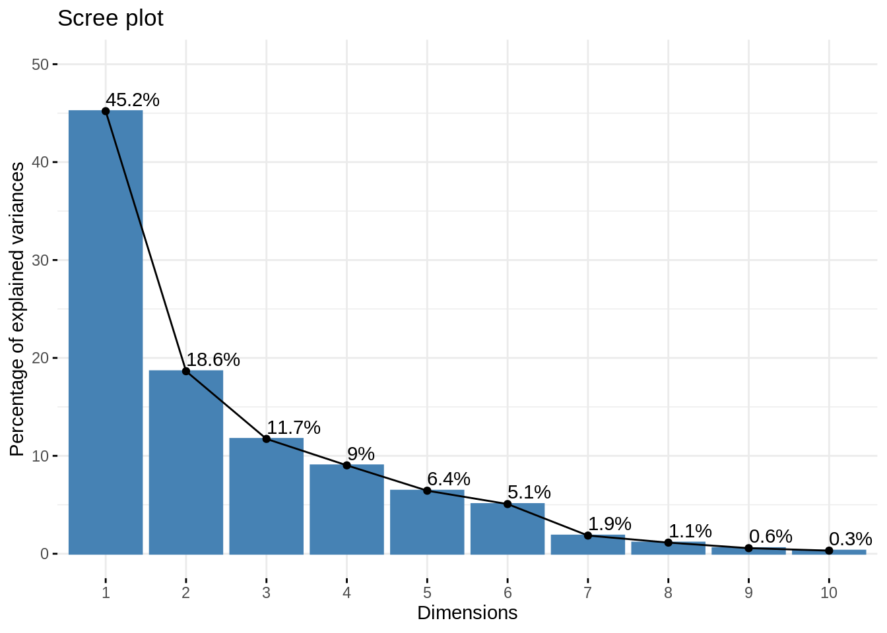

Tutorial: PCA on State Budget
Julien Chiquet
2020-09-28
Preliminaries
Package requirements
We start by loading a couple of packages for data manipulation, dimension reduction and fancy representations.
library(tidyverse) # advanced data manipulation and vizualisation
library(knitr) # R notebook export and formatting
library(FactoMineR) # Factor analysis
library(factoextra) # Fancy plotting of FactoMineR outputs
library(corrplot) # Fancy plotting of matrices
library(GGally) # Easy-to-use ggplot2 extensions
theme_set(theme_bw()) # set default ggplot2 theme to black and whiteImporting the Data set
Data description
We consider a data set inherited from the classical ‘French school’ of data analysis. This data set is taken from Bouroche and Saporta (1980) and has been analyzed e.g. in Duby and Robin (2006). The data matrix \(\mathbf{X} = (x_{ij})_{i=1,\dots,n; j=1,\dots,p}\) contains the distribution of the French State budget between \(p = 11\) different items between \(n = 24\) years sampled between 1872 and 1971.
The values are given as a percentage of the overall budget and the different items are
- Government
- Agriculture
- Business and Industry
- Employment
- Housing
- Education
- Welfare
- Veterans
- Defence
- Debt Interest
- Others
Data loading
The file budget.csv is available in comma separated format, with ; as separator and , as decimal (SOME cumbersome French formatting).
Load the data into a data frame and name the columns appropriately.
The function read_csv2 from the readr package, part of the tidyverse can hande this automatically. We also specify the column names, corresponding to the budgetary items, plus the corresponding year, while loading the data set into R:
state_budget <- readr::read_csv2("data/budget.csv",
col_names = c(
"Year",
"Governments",
"Agriculture",
"Business and Industry",
"Employment",
"Housing",
"Education",
"Welfare",
"Veterans",
"Defence",
"Debt Interest",
"Others"
))Basic descriptive analysis
Data table summary
Have a look at the head of the data table \(\mathbf{X}\)
kable is used adapt the formatting to the type of output: HTML, screen, PDF
state_budget %>% head() %>% knitr::kable()| Year | Governments | Agriculture | Business and Industry | Employment | Housing | Education | Welfare | Veterans | Defence | Debt Interest | Others |
|---|---|---|---|---|---|---|---|---|---|---|---|
| 1872 | 18.0 | 0.5 | 0.1 | 6.7 | 0.5 | 2.1 | 2.0 | 0 | 26.4 | 41.5 | 2.1 |
| 1880 | 14.1 | 0.8 | 0.1 | 15.3 | 1.9 | 3.7 | 0.5 | 0 | 29.8 | 31.3 | 2.5 |
| 1890 | 13.6 | 0.7 | 0.7 | 6.8 | 0.6 | 7.1 | 0.7 | 0 | 33.8 | 34.4 | 1.7 |
| 1900 | 14.3 | 1.7 | 1.7 | 6.9 | 1.2 | 7.4 | 0.8 | 0 | 37.7 | 26.2 | 2.2 |
| 1903 | 10.3 | 1.5 | 0.4 | 9.3 | 0.6 | 8.5 | 0.9 | 0 | 38.4 | 27.2 | 3.0 |
| 1906 | 13.4 | 1.4 | 0.5 | 8.1 | 0.7 | 8.6 | 1.8 | 0 | 38.5 | 25.3 | 1.9 |
The following function is useful to have a quick look at a data frame a check types of each variables:
glimpse(state_budget)## Rows: 24
## Columns: 12
## $ Year <dbl> 1872, 1880, 1890, 1900, 1903, 1906, 1909, 191…
## $ Governments <dbl> 18.0, 14.1, 13.6, 14.3, 10.3, 13.4, 13.5, 12.…
## $ Agriculture <dbl> 0.5, 0.8, 0.7, 1.7, 1.5, 1.4, 1.1, 1.4, 0.3, …
## $ `Business and Industry` <dbl> 0.1, 0.1, 0.7, 1.7, 0.4, 0.5, 0.5, 0.3, 0.1, …
## $ Employment <dbl> 6.7, 15.3, 6.8, 6.9, 9.3, 8.1, 9.0, 9.4, 11.9…
## $ Housing <dbl> 0.5, 1.9, 0.6, 1.2, 0.6, 0.7, 0.6, 0.6, 2.4, …
## $ Education <dbl> 2.1, 3.7, 7.1, 7.4, 8.5, 8.6, 9.0, 9.3, 3.7, …
## $ Welfare <dbl> 2.0, 0.5, 0.7, 0.8, 0.9, 1.8, 3.4, 4.3, 1.7, …
## $ Veterans <dbl> 0.0, 0.0, 0.0, 0.0, 0.0, 0.0, 0.0, 0.0, 1.9, …
## $ Defence <dbl> 26.4, 29.8, 33.8, 37.7, 38.4, 38.5, 36.8, 41.…
## $ `Debt Interest` <dbl> 41.5, 31.3, 34.4, 26.2, 27.2, 25.3, 23.5, 19.…
## $ Others <dbl> 2.1, 2.5, 1.7, 2.2, 3.0, 1.9, 2.6, 1.3, 0.2, …Each variable (i.e. budget item) takes it value in \([0,100]\) (proportion of the current budget). Propose a plot to summarize the distribution of these proportions
state_budget %>%
select(-Year) %>%
pivot_longer(everything()) %>%
ggplot() +
aes(x = name, y = value) + labs(x = "budget item", y = "value (proportion)") +
geom_boxplot() + geom_point(alpha = 0.5) +
theme(axis.text.x = element_text(angle = 90))
Data transformation
Create a categorical variable (factor) with a couple of level to regroup samples by time interval that you find relevant in history of 20th century. Check that these period are balanced.
We identify 4 historical periods to regroup the ‘Year’ variable (the id of the sample) into four clusters that might be interesting for interpreting the the PCA. We amend our data frame by adding a column encoding this new descriptive variable (that will not be used in the PCA, of course!).
state_budget <- state_budget %>%
mutate(Period = cut(Year,
breaks = c(-Inf, 1900, 1920, 1947, Inf), right = FALSE,
labels = c("<1900", "[1900, 1920)", "(1920, 1947]", ">= 1947"))
)Scatterplot/pairs plot
When only few variables are at play, plotting the scatterplot or (pairs-to-pairs plot) might help in finding obvious relations.
Use the function scatmat from {GGally} to do that
state_budget %>%
dplyr::select(-Year) %>% mutate_if(is_double, scale) %>%
GGally::scatmat(color = "Period")
When many more continuous variables are observed, a quick glance at the redondancy in information may be explored by representing the correlation matrix, optionally regrouped according to similarity (here, hierarchical clustering).
Use the package {corrplot} to check correlations between variables. What do you conclude?
par(mfrow = c(1,2))
state_budget %>% dplyr::select(-Year, -Period) %>%
cor() %>% corrplot::corrplot()
state_budget %>% dplyr::select(-Year, -Period) %>%
cor() %>% corrplot::corrplot(method = "color", order = "hclust")
It seems that some variables carry the same information: dimension reduction might help. The data is probably living in a smaller space than \(p=11\).
Principal Component Anaysis
Performing PCA
Before performing the PCA, we center (always!) and scale the continuous columns in the data table, in order to give the same weight to items with high or lower percentage.
Form the matrix \(\mathbf{X}\) of continuous scaled variables and perform the PCA with {FactoMineR}
X <- state_budget %>%
mutate_if(is_double, scale) %>%
select(-Year, -Period)
rownames(X) <- state_budget$Year## Warning: Setting row names on a tibble is deprecated.myPCA <- FactoMineR::PCA(
X = X, # the data on which PCA is performed
scale.unit = FALSE, # scaling has been made "manually"
graph = FALSE, # to make plot right now
ncp = 11 # keep all component
) Quick Recap on PCA
Recall that, essentially, a PCA and all important quantities is obtained by computing the eigen decomposition of the empirical covariance matrix: \[\begin{equation*} \hat{\boldsymbol \Sigma} = \mathbf{X}^\top \mathbf{X} = \mathbf{U} \boldsymbol{\Lambda} \mathbf{U}^\top. \end{equation*}\]
Equivalently – and this is how it is computed in most program – PCA is obtained by performing the Singular Value Decomposition of the data matrix \(\mathbf{X}\), i.e., \[\begin{equation*} \mathbf{X} = \mathbf{V} \boldsymbol{\Lambda}^{1/2} \mathbf{U}^\top. \end{equation*}\]
We use the following vocabulary:
- the weights, or rotation matrix, or loadings, is the orthogonal matrix \(\mathbf{W} = \mathbf{U}\)
- the score matrix, or principal components, is the matrix \(\mathbf{F} = \mathbf{X}\mathbf{U} = \mathbf{V}\mathbf{\Lambda}^{1/2}\).
- the singular values are stack in the diagonal matrix \(\mathbf{\Lambda}^{1/2}\).
- the eigen values \(\lambda_j\) of \(\boldsymbol\Sigma\) are the square of the singular values of \(\mathbf{X}\).
All in all, a PCA is a matrix factorisation such that \[\begin{equation*} \mathbf{F} \mathbf{U}^\top = \mathbf{X}. \end{equation*}\]
Scree plot
The first diagnostic plot to make is a scree plot, which display the proportion of explained variances by the successive component. Recall that is related to the eigen values of the empirical covariance: \[\begin{equation*} \mathrm{percent}(\mathrm{var}_{j}) = \frac{\lambda_j}{\sum_{j=1}^p \lambda_j}. \end{equation*}\]
Make a scree plot. Comment!
factoextra::fviz_eig(myPCA, addlabels = TRUE, ylim = c(0,50))
Remark that the last 6 axes (> 50% of the number of variables) explain less than 10% of the total variance: this is an important argument toward dimension reduction.
Variables study
All information about variables can be reached as follow:
var <- get_pca_var(myPCA)
var## Principal Component Analysis Results for variables
## ===================================================
## Name Description
## 1 "$coord" "Coordinates for the variables"
## 2 "$cor" "Correlations between variables and dimensions"
## 3 "$cos2" "Cos2 for the variables"
## 4 "$contrib" "contributions of the variables"Eigen vector / Weights (a.k.a. loadings)
The eigen vectors of the empirical covariance matrix give weights for obtaining the new variables as a linear combinaison of the original ones.
Check that the right eigen vectors of \(\mathbf{X}\), and the eigen vectors or \(\boldsymbol\Sigma\) match with the loadings. Also check that it is orthogonal
U <- data.frame(myPCA$svd$V) ## eigen(cov(X))$vector
dimnames(U) <- dimnames(var$coord)
kable(U, digits = 3)| Dim.1 | Dim.2 | Dim.3 | Dim.4 | Dim.5 | Dim.6 | Dim.7 | Dim.8 | Dim.9 | Dim.10 | Dim.11 | |
|---|---|---|---|---|---|---|---|---|---|---|---|
| Governments | -0.078 | 0.517 | 0.301 | -0.107 | -0.404 | 0.538 | 0.062 | 0.332 | 0.194 | -0.072 | 0.123 |
| Agriculture | 0.367 | 0.004 | 0.323 | -0.154 | 0.039 | -0.294 | 0.769 | -0.013 | 0.090 | -0.202 | 0.091 |
| Business and Industry | 0.374 | 0.238 | -0.125 | 0.258 | -0.180 | -0.260 | -0.203 | -0.245 | 0.620 | 0.266 | 0.254 |
| Employment | -0.061 | 0.440 | -0.331 | 0.282 | 0.650 | 0.292 | 0.275 | -0.099 | 0.000 | -0.028 | 0.140 |
| Housing | 0.324 | 0.278 | -0.339 | 0.208 | -0.312 | -0.236 | -0.080 | 0.214 | -0.562 | -0.287 | 0.238 |
| Education | 0.353 | -0.096 | 0.374 | -0.116 | 0.377 | 0.152 | -0.474 | -0.069 | 0.025 | -0.482 | 0.291 |
| Welfare | 0.419 | -0.070 | 0.146 | -0.151 | 0.124 | 0.233 | 0.002 | 0.091 | -0.357 | 0.728 | 0.202 |
| Veterans | 0.130 | -0.564 | -0.330 | 0.203 | -0.014 | 0.262 | 0.145 | 0.527 | 0.292 | -0.089 | 0.233 |
| Defence | -0.275 | 0.151 | -0.228 | -0.639 | 0.183 | -0.348 | -0.083 | 0.295 | 0.123 | 0.075 | 0.414 |
| Debt Interest | -0.399 | -0.210 | 0.141 | 0.180 | -0.209 | 0.080 | 0.141 | -0.410 | -0.157 | 0.009 | 0.694 |
| Others | -0.246 | 0.078 | 0.472 | 0.506 | 0.219 | -0.377 | -0.090 | 0.477 | -0.024 | 0.155 | 0.058 |
This is a rotation matrix, and thus an orthogonal matrix:
sum((t(U) - solve(U))^2)## [1] 4.258283e-30The coordinate of the variables projected on the correlation circle are equal to \(\mathbf{U} \sqrt{\mathbf{\Lambda}}\), the correlation between the new variables and the original ones. Indeed,
U <- as.matrix(U)
D <- diag(myPCA$svd$vs)
sum((U %*% D - var$coord)^2)## [1] 0Check the contribution of the original variables to the new axis. Comment
The contribution of the original variable to the (e.g first two) components are given in percentage by the field contrib:
fviz_contrib(myPCA, choice = "var", axes = 1:2)
Correlation circle
The correlation circle gives a quick representation of how new and original variables are related together.
Make the plot, comment! Also check the quality of the representation if the variables
kable(var$cor, digits = 3)| Dim.1 | Dim.2 | Dim.3 | Dim.4 | Dim.5 | Dim.6 | Dim.7 | Dim.8 | Dim.9 | Dim.10 | Dim.11 | |
|---|---|---|---|---|---|---|---|---|---|---|---|
| Governments | -0.173 | 0.740 | 0.342 | -0.107 | -0.340 | 0.402 | 0.028 | 0.118 | 0.049 | -0.013 | 0.000 |
| Agriculture | 0.818 | 0.005 | 0.367 | -0.154 | 0.033 | -0.219 | 0.348 | -0.005 | 0.023 | -0.038 | 0.000 |
| Business and Industry | 0.833 | 0.341 | -0.142 | 0.257 | -0.151 | -0.194 | -0.092 | -0.087 | 0.155 | 0.050 | 0.001 |
| Employment | -0.137 | 0.631 | -0.376 | 0.281 | 0.547 | 0.218 | 0.124 | -0.035 | 0.000 | -0.005 | 0.000 |
| Housing | 0.722 | 0.398 | -0.385 | 0.208 | -0.263 | -0.176 | -0.036 | 0.076 | -0.141 | -0.054 | 0.001 |
| Education | 0.787 | -0.137 | 0.425 | -0.115 | 0.318 | 0.113 | -0.214 | -0.025 | 0.006 | -0.090 | 0.001 |
| Welfare | 0.933 | -0.101 | 0.166 | -0.150 | 0.104 | 0.174 | 0.001 | 0.032 | -0.089 | 0.136 | 0.000 |
| Veterans | 0.289 | -0.807 | -0.375 | 0.202 | -0.012 | 0.196 | 0.065 | 0.187 | 0.073 | -0.017 | 0.000 |
| Defence | -0.612 | 0.216 | -0.260 | -0.637 | 0.154 | -0.260 | -0.037 | 0.104 | 0.031 | 0.014 | 0.001 |
| Debt Interest | -0.889 | -0.301 | 0.160 | 0.179 | -0.176 | 0.060 | 0.064 | -0.145 | -0.039 | 0.002 | 0.001 |
| Others | -0.548 | 0.112 | 0.536 | 0.505 | 0.184 | -0.282 | -0.041 | 0.169 | -0.006 | 0.029 | 0.000 |
fviz_pca_var(myPCA, col.var = "cos2", axes = 1:2)
These quantities measure the correlation between the variabes in the new and the original bases.
The quality of the representation of the original variables by the new ones is measure with the (squared) cosine between them: a high cos2 indicates a good representation of the variable on the principal component.
Indiviual Factor Map
All information about variables can ge reached as follow:
ind <- get_pca_ind(myPCA)
ind## Principal Component Analysis Results for individuals
## ===================================================
## Name Description
## 1 "$coord" "Coordinates for the individuals"
## 2 "$cos2" "Cos2 for the individuals"
## 3 "$contrib" "contributions of the individuals"The principal components / Scores
The principal components are the the coordinate of the points in the new basis, after rotating the original data by the matrix of eigen vectors \(U\).
Compute them by yourself and check that it matches the coordinate of the individuals
PC <- as.matrix(X) %*% U
kable(t(PC[, 1:2]), digits = 3)| 1872 | 1880 | 1890 | 1900 | 1903 | 1906 | 1909 | 1912 | 1920 | 1923 | 1926 | 1929 | 1932 | 1935 | 1938 | 1947 | 1950 | 1953 | 1956 | 1959 | 1962 | 1965 | 1968 | 1971 | |
|---|---|---|---|---|---|---|---|---|---|---|---|---|---|---|---|---|---|---|---|---|---|---|---|---|
| Dim.1 | -2.839 | -2.709 | -2.366 | -2.013 | -2.289 | -1.943 | -1.867 | -1.401 | -2.094 | -1.120 | -1.639 | -1.149 | 0.265 | 0.645 | -0.394 | 1.066 | 2.321 | 1.178 | 2.865 | 2.629 | 2.99 | 3.076 | 3.617 | 3.171 |
| Dim.2 | 1.003 | 1.970 | 0.219 | 0.739 | 0.163 | 0.613 | 0.795 | 0.752 | 0.936 | -2.822 | -2.556 | -1.792 | -1.918 | -2.248 | -1.315 | 2.209 | 2.130 | 1.111 | 0.225 | 0.136 | -0.11 | 0.303 | -0.459 | -0.086 |
This match the coordinate computed by FactoMineR:
kable(t(ind$coord[, 1:2]), digits = 3)| 1872 | 1880 | 1890 | 1900 | 1903 | 1906 | 1909 | 1912 | 1920 | 1923 | 1926 | 1929 | 1932 | 1935 | 1938 | 1947 | 1950 | 1953 | 1956 | 1959 | 1962 | 1965 | 1968 | 1971 | |
|---|---|---|---|---|---|---|---|---|---|---|---|---|---|---|---|---|---|---|---|---|---|---|---|---|
| Dim.1 | -2.839 | -2.709 | -2.366 | -2.013 | -2.289 | -1.943 | -1.867 | -1.401 | -2.094 | -1.120 | -1.639 | -1.149 | 0.265 | 0.645 | -0.394 | 1.066 | 2.321 | 1.178 | 2.865 | 2.629 | 2.99 | 3.076 | 3.617 | 3.171 |
| Dim.2 | 1.003 | 1.970 | 0.219 | 0.739 | 0.163 | 0.613 | 0.795 | 0.752 | 0.936 | -2.822 | -2.556 | -1.792 | -1.918 | -2.248 | -1.315 | 2.209 | 2.130 | 1.111 | 0.225 | 0.136 | -0.11 | 0.303 | -0.459 | -0.086 |
The individual factor map is the representation of the principal components/scores in the specified axes.
Use {factoextra} to represent the individuals in the new basis, on axes (1,2), (1,3), (2,3). Add some color related to the period. Comment
Here, we change the size of the point according to the quality of their representation (measure with the cosine to the square, just like with variable factor map).
fviz_pca_ind (myPCA,
pointsize = "cos2",
pointshape = 21,
fill = "#E7B800",
repel = TRUE ,
axes = c(1, 2))
Let us enrich our plot by the Period, a qualitative variable that we wish related with the budget.
par(mfrow = c(1,3))
fviz_pca_ind (myPCA,
geom.ind = "point",
col.ind = state_budget$Period,
palette = c("#00AFBB", "#E7B800", "#FC4E07","#2E9FDF", "#000000"),
legend.title = "Period",
axes = c(1, 2))
Biplot
When there are only few variables (only tens), it is possible to give an unifying representation of individual and variable factor maps into a single plot, called biplot.
Make the biplot and comment
fviz_pca_biplot (myPCA,
geom.ind = "point",
col.ind = state_budget$Period,
palette = c("#00AFBB", "#E7B800", "#FC4E07","#2E9FDF", "#000000"),
legend.title = "Period",
axes = c(1, 2))
This plot is especially helpful to identifiy groups of individuals, how the new components are related to the original variables and finally which group individuals is carrying which part of the information/variables.
References
Bouroche, Jean-Marie, and Gilbert Saporta. 1980. L’analyse Des Données. Presses universitaires de France Paris.
Duby, Camille, and Stéphane Robin. 2006. “Analyse En Composantes Principales.” Institut National Agronomique, Paris-Grignon 80.